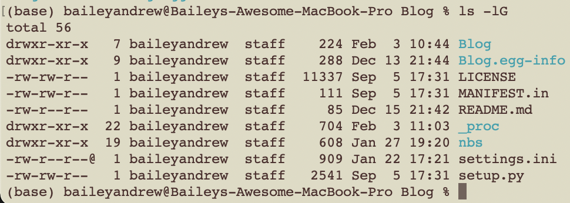

Attempting to Customize The ls Command

For years now my Mac has been patiently pestering me to change my terminal from bash to zsh, so I bit the bullet today and did it. This got me thinking about what a shell actually is, and their ability to be customized. This quest brought to my attention that the ls command, which prints files in a directory, has some optional flags you can pass to it!

ls -l.
ls -G.You can even combine the two with ls -lG, but I’ll let you try that for yourself.
I like this very much, so I thought I would try to control the colors that are outputted. To do this, I went into my ~/.zshrc file (presumably if I kept with bash it would be ~/.bashrc) - this is the file that runs every time you create a new terminal. The current contents of this file were:
# >>> conda initialize >>>
# !! Contents within this block are managed by 'conda init' !!
__conda_setup="$('/Users/baileyandrew/mambaforge/bin/conda' 'shell.zsh' 'hook' 2> /dev/null)"
if [ $? -eq 0 ]; then
eval "$__conda_setup"
else
if [ -f "/Users/baileyandrew/mambaforge/etc/profile.d/conda.sh" ]; then
. "/Users/baileyandrew/mambaforge/etc/profile.d/conda.sh"
else
export PATH="/Users/baileyandrew/mambaforge/bin:$PATH"
fi
fi
unset __conda_setup
if [ -f "/Users/baileyandrew/mambaforge/etc/profile.d/mamba.sh" ]; then
. "/Users/baileyandrew/mambaforge/etc/profile.d/mamba.sh"
fi
# <<< conda initialize <<<Which I assume was auto-created when I first installed conda/mamba.
I then added the following:
# >>> my custom scripts >>>
export CLICOLOR=1
export LSCOLORS="gxfxcxdxbxegedabagacad"
# <<< my custom scripts <<<
ls -lG.So its clear I can affect the colors, but they’re not the colors I want. And here’s where I get sad - I wanted the to customize specific colors, but terminals are limited to only 256 (whyyyyyyy) and I don’t have fine-grained control over which file type gets which color.
The end.